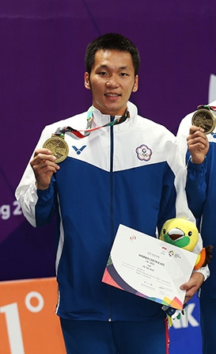
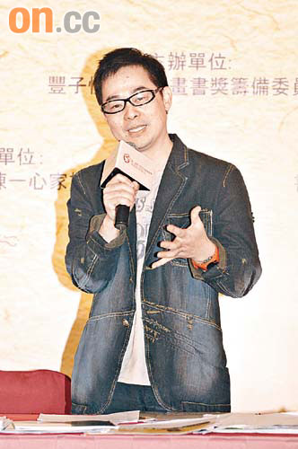
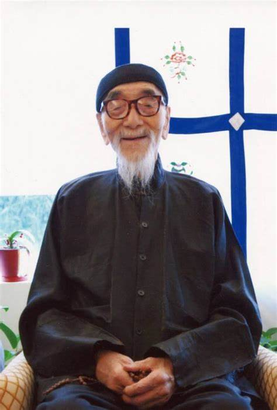

策展主題說明
- 致親愛的孤獨者（電影同名圖文書）:
2019年，夢田文創以紀錄片中「給孤獨者書店」書店為源，將現代社會關係中所呈現的「孤獨」作為策展主題， 以《致親愛的孤獨者》為名透過劇台劇、電影、劇集、小說等多元跨界媒材展現， 用不同的視角顯露當代人的孤獨、自我、虛擬、甚至猶疑， 試圖以多元的創作與在你我身邊的「孤獨者」對話，重新認識「孤獨」的正向定義。
- 道與藝合-道教與民間文學藝術展:
李豐楙教授再與宗教博物館合作展示，策展主題：「道與藝合」。 本次策展共分8個主題：八仙慶會、大聖西遊、靈官護法、玄帝修行、封神演義、天界翱翔、地府遊冥、人間祈福。 其道教研究將經典文本與科儀、圖像結合，其中道壇畫、神像及神聖用物公私罕見收藏。 中國大陸改革開放後道教文物流出海外，故在臺灣得以搜集整理，解說後曾與世界宗教博物館合作舉辦展覽，又受故宮博物院之邀研究館藏文物，如明清仙山畫、三官出巡圖等，均屬院畫或文人畫； 而道教壇場畫與儀式用物乃民間畫師根據粉本繪製，實可歸屬「道教藝術」， 故透過公私展覽，將道教藝術置入中國藝術史中，從而論定其宗教藝術的文化價值。
- 銀鹽世代：尋找歲月靈光 臺灣攝影家原作展1890s～2015:
以「銀鹽世代」為策展主題，展出國內橫跨三個世紀的攝影家31位、作品254件作品， 期藉由臺灣銀鹽攝影創作之影像脈絡，呈現臺灣社會集體記憶與國人共享。
- 返常―2013亞洲藝術雙年展:
本屆「2013亞洲藝術雙年展」以「返常」為策展主題， 將從過去幾年高潮迭起的全球性無常變動中， 重新找回忠於生活本質的文化核心議題：思索關於我們如何生活， 如何面對當下的日常處境，以及個體與空間環境間的互動關係。
- M型思惟：2011亞洲藝術雙年展:
「2011亞洲藝術雙年展」以「M型思惟」為策展主題， 反映亞洲所面臨的M型時代的趨勢與危機，提出亞洲深具溝通機能的文化態度。 本展邀請來自20個亞洲國家共40位/組藝術家參與展出， 展出的創作類型涵括了裝置、繪畫、影像、雕塑、地景藝術、行動表演及互動式工作坊等。
策展團隊介紹
| 李洋  |
1995年生，金門縣金寧鄉人，臺灣男子羽球運動員。 畢業於臺北市立大學研究所，現為土地銀行羽球隊員。 在父親鼓勵下，小學開始接觸羽球，但因起步較晚，羽球生涯並不順遂。 後來秉持「球沒落地，絕不放棄」的精神，在羽球生涯屢有突破。 為感謝家鄉金門的栽培，成立「金門體育會李洋基金優秀運動選手培訓獎勵金」， 幫助有急難需求的弱勢選手，也積極培育羽球後進。 2013年，與搭檔江聿偉在全國羽球排名賽獲得乙組冠軍而成功晉升甲組 2018年，與李哲輝聯手拿下雅加達亞運男雙銅牌 2021年，與王齊麟在東京奧運奪下臺灣首面球類項目金牌 |
| 幾米/繪本作家  |
宜蘭人，現在和家人與貓住在台北。 幾米喜歡畫畫，大學念美術系，畢業後到廣告公司上班， 大量閱讀各種插畫與繪本作品來自學插畫。 幾米覺得繪本實在太棒了，不該只被當作兒童讀物， 便開始創作給各年齡層讀者閱讀的繪本，開啟了成人繪本的新類型。 出版繪本二十多年來，幾米創作了超過六十部作品。 作品被翻譯成二十種外語，在全球各地出版了近兩百本不同的外語作品。 幾米的繪本曾被改編成音樂劇、電視劇、電影、動畫，也有VR互動作品。 在台北、新北、宜蘭、台南有多處幾米的地景藝術和主題公園， 日本的大地藝術祭和北阿爾卑斯藝術祭也邀請幾米參展創作， 最新的公共藝術作品在淡海輕軌綠山線沿線車站及漁人碼頭。 幾米作品在台灣、中國大陸、香港、比利時、西班牙、瑞典、葡萄牙都曾獲得重要獎項。 繪本是幾米多年來持續每天進行的創作， 近年除了繪本之外，幾米也嘗試油畫、雕塑等其他形式的藝術創作。 能夠持續創作，且透過創作與讀者互動，是幾米最感到幸福且幸運的事。 |
| 毓鋆  |
毓鋆（1906年10月27日－2011年3月20日），愛新覺羅氏，名金成，號安仁居士， 來台後曾化名劉柱林（救命恩人之姓名），生於大清北京，清朝宗室後裔，滿洲正紅旗人， 儒家學者，創辦奉元書院，以私人講學，外界都敬稱其為「毓老」而不名， 在台灣宣揚中華文化六十餘年，述而不作，及門弟子有數萬人之多，遍及海內外與各行業。 毓老一生倡經世致用之學並注重對時勢之分析，為四書五經、諸子百家注入了真實的生命和和生機。 毓鋆自稱是禮親王代善後裔，但其所用字輩與禮親王家同代之人相異。 身後榮譽 總統華總二榮字第10000064990號令 中華民國政府通過總統頒佈褒揚令給予褒揚，褒揚令原文為： “當代經學家劉柱林，本名愛新覺羅毓鋆，沈潛醇謹，識度清邁。 幼歲嫻誦四書五經，修習格致西學，及長負笈日本、德國，覃思邃密，績學博文。 隻身來臺後，曾遠赴臺東部落執教，啟迪沾溉，嘉惠原鄉。 嗣任教國立臺灣大學、政治大學暨輔仁大學、文化大學等校， 闡揚儒學經典奧旨，析論法家治術精微，志道游藝，桃李門牆。 復開辦奉元書院，暢申修齊治平哲理，厚植庠序教化功能， 勤攄澹泊，述而不作；樂育宣劬，濟濟多士。 綜其生平，流風德澤，見淑世牖民之深衷； 紹統延緒，成中華文化之薪傳，學海津梁，貽範永馨。 遽聞上壽捐館，軫悼殊殷，應予明令褒揚，用示政府篤念耆碩之至意。” 前總統馬英九/中華民國總統府 |